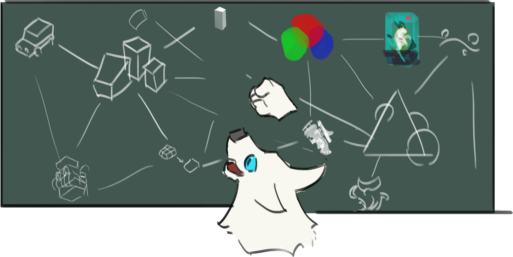
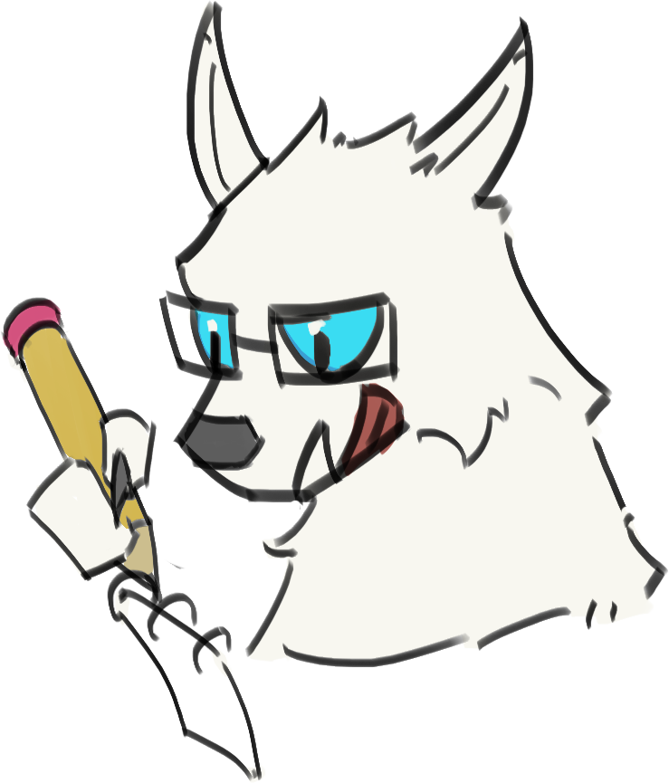
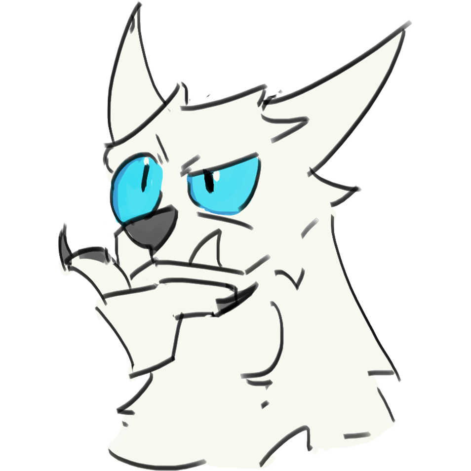
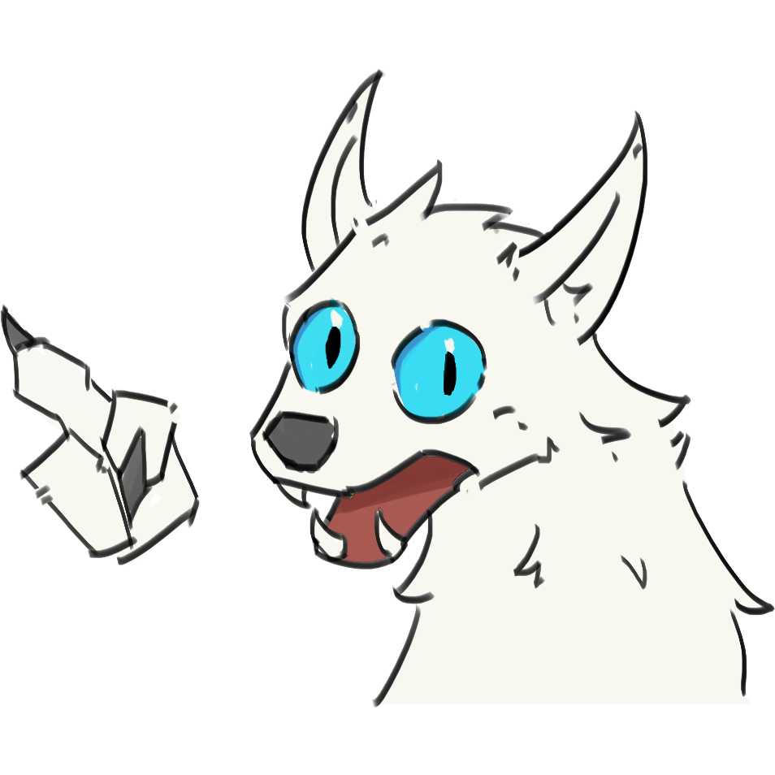
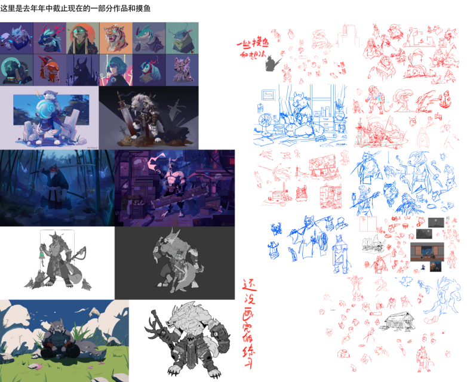
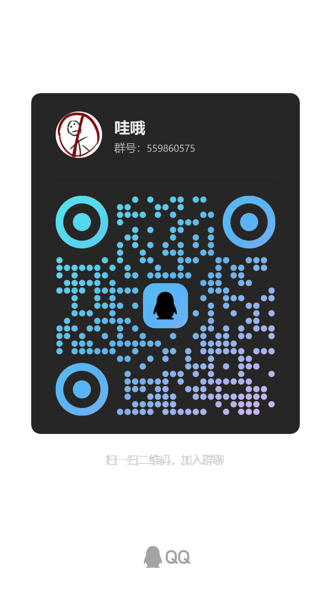

这是我整理绘画思考与问题的地方，希望把学习过程中遇到的困难与方法收集成一份可复用的 问题库。
我想为今后自己开发的网站设置一张学习绘画的地图，通过截至目前三年的学习路径，把从新手到现在 的过程中的困难与思考分享出来。每个问题都会打上标签，让知识像蜘蛛网一样互相连接，方便遇到困难 的人知道自己需要补哪一块、该怎么做、该怎么练。

相比绘画带来的成就或收益，我更喜欢在创作的途中研究绘画里的思路和想法，并把这些分享给别人。 我享受通过帮助别人得到的正反馈，这种反馈是其他方面无法相比的；而这一动机需要大量的问题来源， 所以我想把问题收集起来，让这个“知识地图”的底座更扎实。

你可以在群里提问，把问题丢在群里即可；如果比较害怕，直接私信也没问题。我大部分时间都有空， 即使不能第一时间回复，也可以把困惑整理出来，方便我集中处理。

权威感往往来自平台人气、技术/作品与个人因素等。我不是什么很厉害的大佬，也不敢说自己提供的 一定多么强大；如果你愿意听我的理解，或愿意拓展一下思路，我就很乐意分享，哪怕最后你觉得学到 的不多，也能当作一次交流。

无论你是新手、已经走了一段路的高手，或者非常厉害的大佬，我都希望降低彼此沟通的压力。 不因为画技差异而害怕问“笨问题”，也不因为程度不同而不屑交流。理想状态是：双方互相探讨、 分享思路与技巧，形成良性循环的友好环境。
我目前主攻人体造型和角色设计，喜欢软 Q 的人物、场景和插画，也喜欢研究绘画上的思路与有意思的想法。

右边的条形图是我对自己绘画理解的自评分数，是基于“能画出一张可看的画”给自己打的分， 不是给画师或职业作品打分；对我来说要走的路还很长。
这是我的神秘小群，如果你感兴趣欢迎加入。我们可以一起讨论交流绘画甚至其他方面的问题， 偶尔也会有大佬的分享（目前还没有）。当然现在人还不多，活跃度可能比较低。
